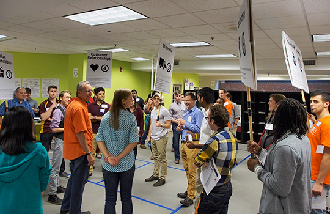
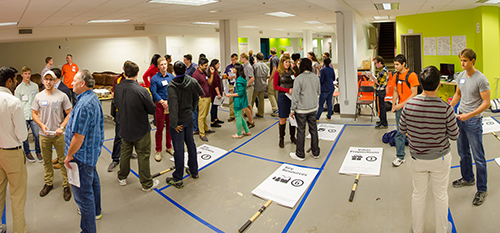
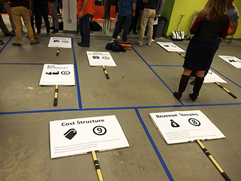
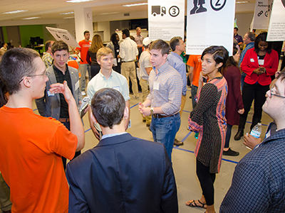
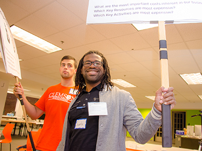

PhD student Bre Przestrzelski and Associate Professor John DesJardins from Clemson University have developed a human-sized business model canvas exercise for students.

John (middle left, in orange shirt) and Bre (middle left, in blue shirt) lead students in a human-sized Business Model Canvas exercise.
by Laurie Moore
photos by James Turner, Clemson University
November 12, 2014
Many entrepreneurs use the Business Model Canvas (BMC) to structure their business models in a simple, visual way, whether they’re planning a new venture or evaluating an existing company. PhD student Bre Przestrzelski and Associate Professor John DesJardins from Clemson University have turned this two-dimensional canvas into a three-dimensional, experiential activity for students.
On October 3, 2014, in Greenville, SC, Bre and John walked 60 students through their human-sized Business Model Canvas exercise — an activity that combined participant role-playing with a large canvas that Bre and John constructed on the venue floor. They led the exercise as part of the University Innovation Fellows Southeastern Regional Meetup, which was hosted by Epicenter’s University Innovation Fellows in collaboration with Clemson University and Furman University. Attendees included Fellows from across the country as well as local students from Wofford College, Converse College, Clemson University, and Furman University.
Bre and John explained that the goal behind their activity was to humanize the Business Model Canvas (BMC) process.
“There are people behind the Business Model Canvas,” said Bre, Clemson’s University Innovation Fellow and a PhD student in bioengineering. “The BMC is thrown around in our classes quite a bit as a collection of all the questions we’ll ever need to ask, but we never talk about who to ask to find the answers.”
For this event, the topic at hand was improving the pedestrian experience in downtown Greenville, and students took on personas of Greenville residents to explore the topic and a business idea they generated themselves. Each floor segment of the human-sized BMC contained a group of students playing these roles as members of the community who were connected with that segment.
This experience turned the BMC from a collection of descriptions on paper to a living map of people, connections and voices. Students learned to view their ideas and problems from a number of perspectives and gained insight into the importance of talking with various stakeholders.
“We wanted the student to live the Business Model Canvas and become a part of the process,” said John, Associate Professor of Bioengineering and Bre’s University Innovation Fellows sponsor and PhD advisor.
Below are materials Bre and John used to create this experience as well as their process and recommendations.
Downloads:
Basic questions and overview of Greenville exercise
Sign template
Name tags for Greenville exercise

Step 1: Know your audience (and your facilitators)
People needs:
- Suggested participant group size: 20-100 participants
- Participant age: undergraduates or graduates and up
- Participant experience level: familiar or very familiar with the BMC
- Facilitators: 1-3 faculty, TAs or other senior-level students who are very familiar with the BMC
Bre said that the exercise was more difficult when she and John tested it with a small number of participants who didn’t understand how the BMC worked. But with an audience familiar with the process, the exercise worked well.
“It really takes a critical mass for this activity to work well,” John said.
“At the Fellows Meetup in October, the participants were willing to speak up,” Bre said. “They shouted things like ‘You’re leaving me out of the equation! I’m the customer!’ Students less familiar with the BMC might not feel comfortable doing this.” Those populating the Human-Sized BMC must have a basic understanding of how they fit into the canvas and what role they can play in the bigger picture.
Facilitators not only need to be familiar with the BMC and the kinds of questions each segment contains, but they need to be “comfortable with chaos,” as John put it.
“This is exactly what a business startup has to go through, but it happens in an hour instead of four months,” he said. “If you don’t know the answers, you have to be prepared to ask others for help. You need to facilitate rather than lead.”
As detailed in Step 5, these facilitators also play the role of the entrepreneurs whose business or idea is being explored. This allows the facilitators to guide the discussion, ask questions, narrate and provide cues.
Step 2: Pick a topic, product or service
For their activity in October, Bre and John focused on the pedestrian experience on Greenville’s main street. Part of their exercise was to create an imaginary product or service in real time, but John said that this exercise would also work with an existing idea or business that was being evaluated.
Step 3: Collect materials and create props
Material list:
- 10 Poster boards (24” x 24” or 24” x 36”)
- 10 Poles
- Painter’s tape
- Name badges/tags
Bre and John built signs for each section of the canvas by printing each segment name, number and questions at their lab. These signs could also be drawn by hand. They affixed the finished boards to thin plywood poles purchased at their local home improvement store and wrapped the base of each pole in padded tape to prevent splinters. They printed name tags with each participant’s imaginary community role to distribute at the event, but they said that these could be written in real time or that participants could select their own community roles. They took the finished signs and name tags to the event along with the painter’s tape to outline the BMC on the floor of the space.
Downloads:
Basic questions and overview of Greenville exercise
Sign template
Name tags for Greenville exercise

Step 4: Prepare the space
Space needs:
- A furniture-free floor space (20’ x 20’ worked for 60 people)
- Bare floors or low carpet that won’t be ruined by tape
Set-up time needs:
- 30 minutes
When arriving at the space, Bre and John cleared out furniture and used painter’s tape to map the outlines of the BMC on the floor (see a Business Model Canvas layout here http://steveblank.files.wordpress.com/2010/10/business-model-canvas.jpg).
Step 5: Action!
Exercise time needs:
- 60 minutes
A review of the BMC was provided by David Orr, a lecturer in the MBA program at Clemson University and COO of Kiyatec, a company spun out by his PhD work at Clemson. After the BMC review, Bre and John gave participants a brief overview of the exercise. They described the process and the challenge the students would be working on (the pedestrian experience on Greenville’s Main Street). Then they asked participants to take a name tag, each of which was filled out with a pre-determined persona (such as Dog Walker, Shopper, City Planner, Mayor, 7-Year-Old Girl, etc.). Bre and John chose these personas in advance to fill different sections of the BMC, but the participants had to decide where to go on their own. As mentioned in Step 1, Bre and John acted as the entrepreneurs in the Value Proposition section, which allowed them to facilitate the experience.
After students learned what the business challenge was, they had a few minutes to get into character, and walked around the room to introduce themselves to their “neighbors.” They were asked to discuss with one another how they interacted with businesses on Greenville’s Main Street. For the “7-Year-Old Girl,” this character might simply buy an ice cream cone from a street vendor. But for the “Mayor,” this student had to dig deep and think how the character facilitated businesses and entrepreneurs in the city.

“It was interesting to see the ‘Accountant’ talking with the ‘Jogger’ about how they perceived businesses and entrepreneurs on Main Street,” John said. “It was a community event!”
Following this introduction, they moved to the BMC segment rectangles on the floor. One student for each segment held the sign Bre and John created so everyone in the room could see each segment’s name. Once all the students were in their selected segment squares, they were allowed to introduce themselves and discuss why they were in that square. This allowed them to have a common voice and purpose that focused around the mission of that BMC segment.
Then, it was time to determine the problem that their business would solve. John asked the Customer segment to shout out things that they liked and disliked about Main Street, which ranged from issues with sidewalks to transportation. The Customers and the Entrepreneurs held a short discussion (about 10 minutes) until they determined a minimum viable product that satisfied the needs of a majority of the Customers.
Once the group had selected a specific problem (tourists need a better way to find out about city activities) and solution (a tourist kiosk), Bre and John asked questions from different segments of the BMC. For example, in the Channels segment, they asked, “Through which channels do our customer segments want to be reached?” They called on the participants standing in that segment (Web Designer, Marketing Executive, News Anchor, Mail Carrier, etc) to talk about the channels their personas use to distribute the information relevant to the problem at hand.
“If you know what all the questions are on the Business Model Canvas, you should work to address the majority of them,” John said. “Try to ensure that one question answered leads to another question you pose and work your way around the canvas. It’s essentially improv.”

The goal, Bre and John said, is for the group to work their way down to the bottom of the BMC, and see if Costs and Revenues agree. As the facilitators begin to finish up answering the BMC questions, they can wrap the exercise up with a summary of the idea and how the different sections of the BMC are going to support the idea.
“Then you ask the final question: ‘Customers, are you willing to pay for this service?’ The Customers answer yes or no, and then the activity is over,” John said.
This can be extended with a reflection, where facilitators go around to each segment and ask about their interaction, what they missed, what they would change, what segments did they not talk to, and how the experience enabled them to understand better how their segment interacts with businesses and start-ups in their community.
Bre and John said that the exercise seemed to help the students in other activities during the weekend event, including a design challenge that required them to talk with members of the community.
“I think the exercise helped the student realize that there are many different perspectives involved in a business design,” Bre said.
Bre and John would like your feedback on this exercise! If you use this in a class, please email your feedback and details about your experience to epicenter@stanford.edu.